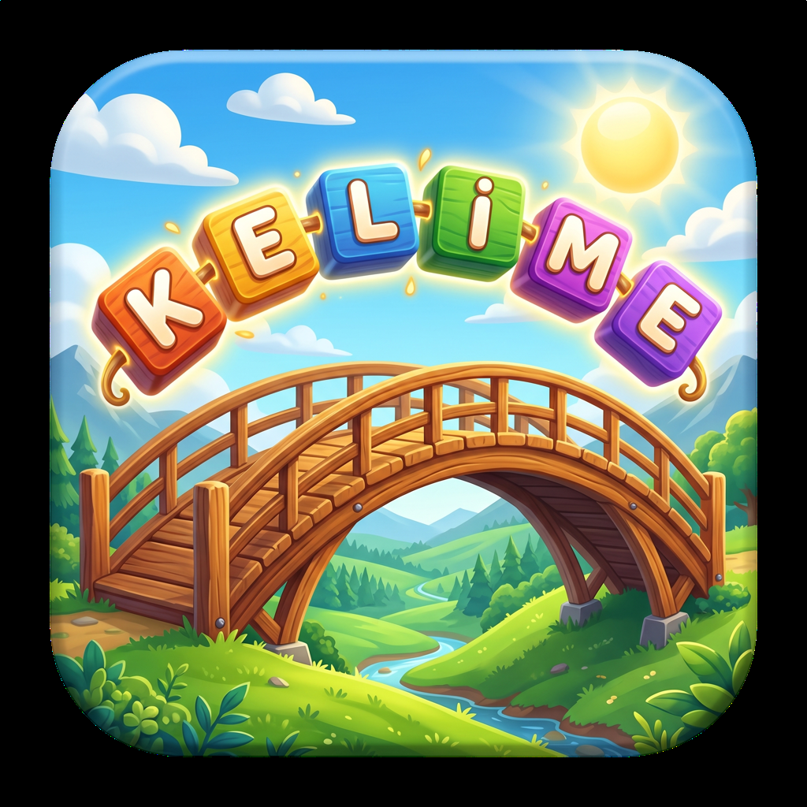

Türkçe kelime tamlamalarını keşfet, köprüler inşa et!
Tamlama Köprüsü ile ilgili herhangi bir sorun yaşıyorsanız veya önerileriniz varsa, size yardımcı olmaktan mutluluk duyarız. Aşağıdaki konularda destek sağlıyoruz:
Tamlama Köprüsü, Türkçe isim tamlamalarını eğlenceli bir şekilde öğrenmenizi sağlayan bulmaca tarzı bir kelime oyunudur.
Her bölümde size iki kelimeden oluşan bir tamlama verilir. İlk kelimenin bazı harfleri gösterilir, ikinci kelimeyi tahmin ederek tamlamayı tamamlamanız gerekir. Doğru cevaplarla köprüler inşa edersiniz!
"Harf Al" butonuna basarak bilinmeyen bir harfi açabilirsiniz. Her ipucu kullanımı sürenizden 5 saniye düşer ve puanınızdan %20 ceza alırsınız.
Her bölümde 0-3 yıldız kazanabilirsiniz. 1 yıldız: Bölümü bitirmek. 2 yıldız: İpucu kullanmadan bitirmek. 3 yıldız: İpucu kullanmadan ve can kaybetmeden bitirmek.
Verileriniz cihazınızda yerel olarak saklanır. Uygulamayı silmeden önce ilerlemenizin yedeklendiğinden emin olun. Sorun yaşıyorsanız destek ekibimize ulaşın.
Tamlama Köprüsü iOS 16+ ve Android 8.0+ cihazlarda çalışır. En iyi deneyim için cihazınızı ve uygulamayı güncel tutmanızı öneririz.
App Store veya Google Play üzerinden yapılan satın almalarda sorun yaşıyorsanız, lütfen önce ilgili mağazanın destek sayfasını kontrol edin. Sorun devam ederse bize ulaşın.
Herhangi bir sorunuz, öneriniz veya geri bildiriminiz varsa aşağıdaki e-posta adresimizden bize ulaşabilirsiniz. En kısa sürede size dönüş yapacağız.
✉️ destek@masalcidost.com.tr